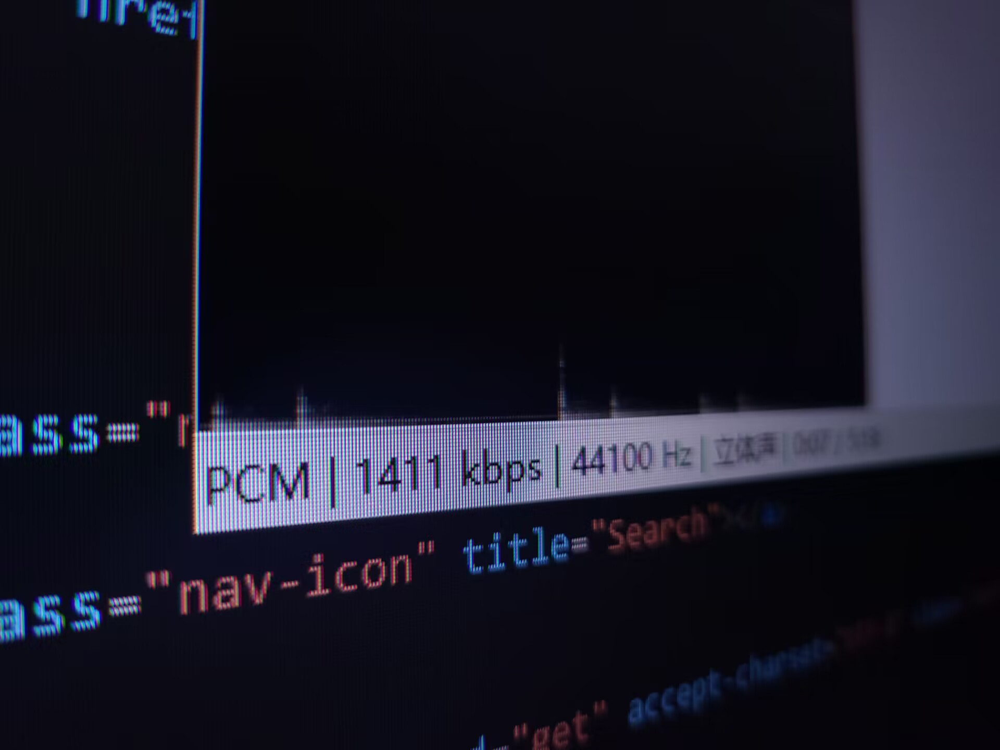

返回音响耳机相关

很早之前我就认为：音频文件不是无损格式的我是不会听的、必须码率不低于1000Kbps位深不低于16Bit
直到我给自己做了一次盲听测试：前后端以及回放设备不变，改变的仅仅是音频文件，同一首歌一个16Bit44Khz的标准CD级无损格式，另一个就是流媒体压缩后的MP3
结果是如果你不是挑刺级别的去分辨的话MP3居然和无损几乎没有区别！
是的，一开始我确实分辨不出来，后来反反复复的去听才勉强区分开来，因为是盲听所以我不知道这种区别是好是坏.结果还是分不出来•́ ‿ ,•̀
似乎从MP3的压缩原理来看似乎很合理：它的压缩并不是简单的丢掉声音数据，而是在丢掉数据的同时，你却几乎察觉不到。
具体原理我就不过多赘述了，简单说就是丢弃了原文件中人耳听不到的声音.众所周知人能听到的频率是有限的MP3就是丢掉了人耳听不到的那部分
虽然早就知道了MP3的原理但是心里一直在抗拒，总认为这是"不好的声音"果然还是心理作用在趋势啊，实际区别根本没有那么大